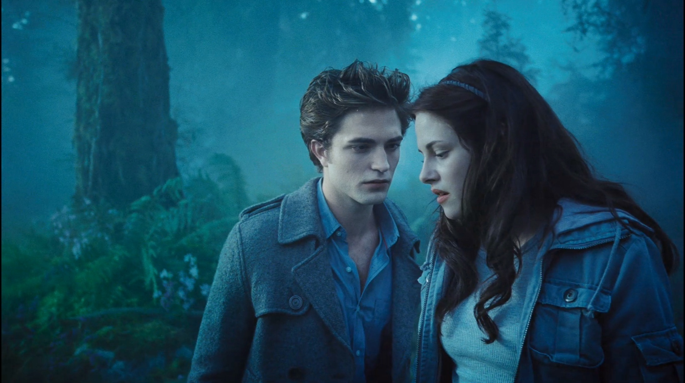
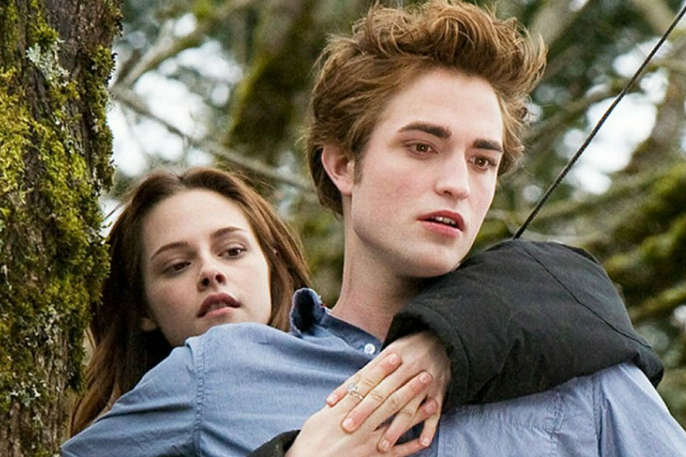
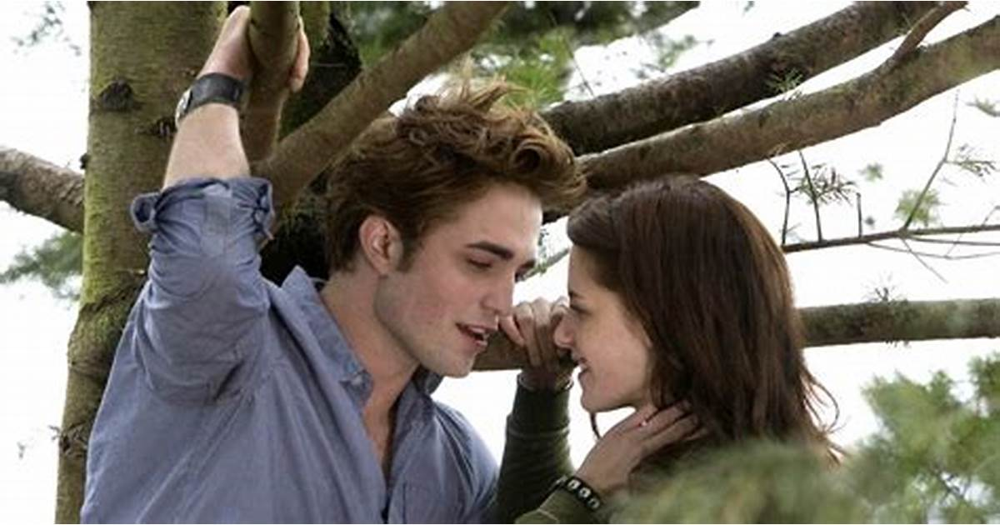

Crepúsculo.
Isabella Swan (Kristen Stewart) e seu pai, Charlie (Billy Burke), mudaram-se recentemente. No novo colégio ela logo conhece Edward Cullen (Robert Pattinson), um jovem admirado por todas as garotas locais e que mantém uma aura de mistério em torno de si. Eles aos poucos se apaixonam, mas Edward sabe que isto põe a vida de Isabella em risco.
minha música favorita do filme.
trailer.
Essas são algumas cenas do filme:


